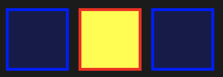
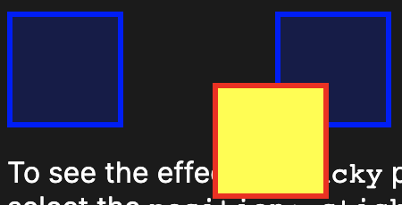
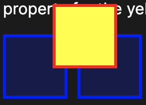
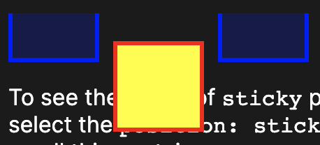
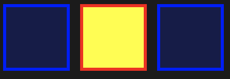

static
The element is positioned according to the normal flow of the document. The top, right, bottom, left, and z-index properties have no effect. This is the default value.
relative
The element is positioned according to the normal flow of the document, and then offset relative to itself based on the values of top, right, bottom, and left. The offset does not affect the position of any other elements; thus, the space given for the element in the page layout is the same as if position were static.
absolute
The element is removed from the normal document flow, and no space is created for the element in the page layout. It is positioned relative to its closest positioned ancestor, if any; otherwise, it is placed relative to the initial containing block. Its final position is determined by the values of top, right, bottom, and left.
sticky
The element is positioned according to the normal flow of the document, and then offset relative to its nearest scrolling ancestor and containing block (nearest block-level ancestor), including table-related elements, based on the values of top, right, bottom, and left. The offset does not affect the position of any other elements.
fixed
The element is removed from the normal document flow, and no space is created for the element in the page layout. It is positioned relative to the initial containing block established by the viewport, except when one of its ancestors has a transform, perspective, or filter property set to something other than none (see the CSS Transforms Spec), in which case that ancestor behaves as the containing block. (Note that there are browser inconsistencies with perspective and filter contributing to containing block formation.) Its final position is determined by the values of top, right, bottom, and left.